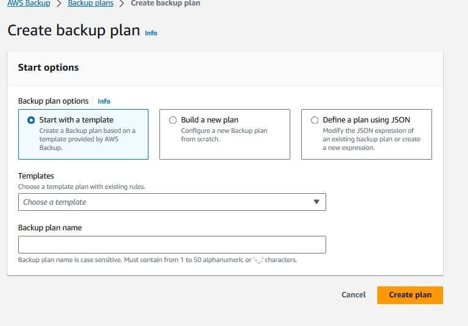

SCC
Brasil
os cloud gurus
Software Cloud Consulting
Your software development, cloud, consulting & shoring company
AWS Backup - How to backup cross region and cross account

By Wolfgang Unger
Introduction
What are the best practices for data backup and retention on AWS?
AWS Backup is not quite easy to setup if you have an advanced backup strategy
You need various configurations on your resources and in AWS Backup to get it
working properly, which is topic of this blog.
We had to setup AWS Backup for cross region and cross account backups for a customer.
The idea was to be prepared for 2 scenarios.
The loss of a Availability Zone ( therefore Cross Region Backups) and also to be prepared also
for a compromised account or application,
where somebody would be able to also delete files or backups in
multiple regions. For this scenario the cross account backup should still contain the backups.
The Backup sources where RDS snapshots and Dynamo tables.
Also S3 Buckets, but these cross region and cross account backups were done by S3 Replication Features,
not AWS Backup.
AWS Backup
A short overview about AWS Backup.
AWS Backup is intented to organize and centralize your backups in AWS. You can define vaults for your backups.
These vaults will contain the backups under 'Recovery Points'.
Once in your vault you can select a Recovery Point and restore.
Depending on your Backup Plan you will find there your daily/weekly/monthly backpups.
We defined 2 vaults, one for RDS and one for Dynamo Backups to not mixup the sources.
Next you can define a backup plan.

You can select a template, start from scratch or use an already existing JSON definition.
To understand this service better, lets have a look on 'Build a new Plan'.
Besides the name the first important section is the Backup rule configuration.
You have choose a vault as target and a backup frequency.
We defined for RDS 3 backup rules:
Daily ( expire after one week)
Weekly ( expire after 5 weeks)
Monthly (expiere after 53 weeks)
This will hold backps for your of the last 7 days, every week in the year and also one for each month.
For Dynamo we defined just a weekly Backup rule.
Once you have selected this, you can define the backup window, the startup time.
There is an attribute 'Start within' which I would set to 1 hour.
The backups don't start immediatelly on the start time, sometimes you have to wait for up to 15 minutes, which is kind of annoying, if you are testing your backup plans.
Also AWS does not provide a lot of CPU and Memory for the jobs, they run quite long, so you need patience to observe the jobs ...
Next interesting section is Copy to destination.
You can choose a different region and also a different account (Copy to another account's vault).
This option only appears after selection the region.
You need to know already your target vault ARN in the backup account to enter this value here.
Once you have enabled the copy to another accounts vault options, the UI will show you this message:
"Allow Backup vault access:"
"Allow access to the account [backup-account number] to copy backups to your Backup vault XY. Learn more"
This message sounds quite weird.
You don't want your backup account to copy in the vault in this account, you want to copy the backup from this account's vault to the backup account.
But I have figured out, you really need to allow the backup account access to the vault,
otherwise the cross account copies won't work. Of yource not to copy into, but probably to read from the vault.
So the UI message is a bit confusing .
More about the policies in a second.
You can define multiple Copy configurations, this allows you to copy your snapshots into another region and also into another account.
Once you have defined these attributes you can click 'Create Plan'.
Once you got this, you need to select the resource assignments, the assets you want to backup.
You need a role which allows to perform the backup actions, so the role needs these AWS managed policies:
AWSBackupServiceRolePolicyForBackup
AWSBackupServiceRolePolicyForRestores
Also you need to define the resource ID you want to backup, you can do this by selecting for example
one RDS, multiple or all databases. You can also exclude resources, if you have selected 'All'.
Policies
The Vault policies are important to setup a working cross account backup.
Without cross account backup you just need to allow the current account access to the vault, but with cross region, both accounts need access.
This is valid for the source vault and the target vault in the backup account.
The vault policy must look like this:
{
"Version": "2012-10-17",
"Statement": [
{
"Effect": "Allow",
"Principal": {
"AWS": [
"arn:aws:iam::stage-account:root",
"arn:aws:iam::backup-account:root"
]
},
"Action": "backup:CopyIntoBackupVault",
"Resource": "*"
}
]
}
Backup Settings
Verify in the Settings of AWS Backups, that the resource types, you want to backup, are enabled.
An important setting and not so easy to find, when you are searching, why your dynamo cross account backups are not working is :
Advanced features for Amazon DynamoDB
I don't know, why there is this extra option for Dynamo,
but it has to be enabled ( default is disabled) for your Dynamo Cross Account Backups.
KMS
An important resource in this setup are KMS keys and their policies.
AWS provides AWS managed KMS keys for many services.
You will need one for your RDS backups and also for your vaults.
If you don't backup cross account, the AWS managed keys can be used, but for
cross account replication you will have to create you own KMS keys and edit the
policies to allow cross account usage.
If you have already a running database with a AWS managed key, the change of the KMS key,
will force a re-creation of the database! Of course you can setup the new with a snapshot of
the old one, but probably you want to avoid this scenario.
So a good advice, if you setup a RDS use your own customer managed KMS key, if cross acccount backups might become relevant one day.
The RDS KMS key's policy must not allow the backup account access, but you need a customer managed
key to perform the copies. As mentioned the AWS managed key will cause an error in the copy job.
The Vaults KMS key must not only allow it's own account but also the backup account the usage of the key, you will have to give these permissions to the backup account:
"kms:GenerateDataKey*"
"kms:Decrypt"
"kms:CreateGrant"
"kms:RevokeGrant"
"kms:List*"
"kms:Get*"
"kms:Describe*"
Conclusion
AWS is not quite easy to manage, at least not if you have an advanced backup scenario with cross account backups.
Verify all the mentioned steps and configuration and you should not run into problems.
Enjoy your backup strategy !
Note: We did setup the whole backup with terraform, not on the UI, but for this blog, I showed the settings in the WebConsole.
Autor

Wolfgang Unger
AWS Architect & Developer
6 x AWS Certified
1 x Azure Certified
A Cloud Guru Instructor
Certified Oracle JEE Architect
Certified Scrum Master
Certified Java Programmer
Passionate surfer & guitar player